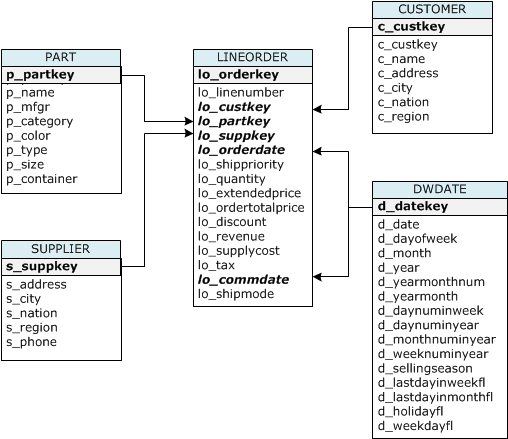

Paso 4: Crear las tablas de muestra
En este tutorial, se utiliza un conjunto de cinco tablas basadas en el esquema Star Schema Benchmark (SSB). En el siguiente diagrama se muestra el modelo de datos en SSB.

Puede que las tablas de SSB ya existan en la base de datos actual. Si es el caso, deberá eliminarlas para quitarlas de la base de datos antes de crearlas con los comandos CREATE TABLE en el siguiente paso. Las tablas utilizadas en este tutorial pueden tener atributos diferentes a las tablas existentes.
Creación de las tablas de muestra
-
Para eliminar las tablas SSB, ejecute los siguientes comandos en su cliente SQL.
drop table part cascade; drop table supplier; drop table customer; drop table dwdate; drop table lineorder; -
Ejecute los siguientes comandos CREATE TABLE en el cliente SQL.
CREATE TABLE part ( p_partkey INTEGER NOT NULL, p_name VARCHAR(22) NOT NULL, p_mfgr VARCHAR(6), p_category VARCHAR(7) NOT NULL, p_brand1 VARCHAR(9) NOT NULL, p_color VARCHAR(11) NOT NULL, p_type VARCHAR(25) NOT NULL, p_size INTEGER NOT NULL, p_container VARCHAR(10) NOT NULL ); CREATE TABLE supplier ( s_suppkey INTEGER NOT NULL, s_name VARCHAR(25) NOT NULL, s_address VARCHAR(25) NOT NULL, s_city VARCHAR(10) NOT NULL, s_nation VARCHAR(15) NOT NULL, s_region VARCHAR(12) NOT NULL, s_phone VARCHAR(15) NOT NULL ); CREATE TABLE customer ( c_custkey INTEGER NOT NULL, c_name VARCHAR(25) NOT NULL, c_address VARCHAR(25) NOT NULL, c_city VARCHAR(10) NOT NULL, c_nation VARCHAR(15) NOT NULL, c_region VARCHAR(12) NOT NULL, c_phone VARCHAR(15) NOT NULL, c_mktsegment VARCHAR(10) NOT NULL ); CREATE TABLE dwdate ( d_datekey INTEGER NOT NULL, d_date VARCHAR(19) NOT NULL, d_dayofweek VARCHAR(10) NOT NULL, d_month VARCHAR(10) NOT NULL, d_year INTEGER NOT NULL, d_yearmonthnum INTEGER NOT NULL, d_yearmonth VARCHAR(8) NOT NULL, d_daynuminweek INTEGER NOT NULL, d_daynuminmonth INTEGER NOT NULL, d_daynuminyear INTEGER NOT NULL, d_monthnuminyear INTEGER NOT NULL, d_weeknuminyear INTEGER NOT NULL, d_sellingseason VARCHAR(13) NOT NULL, d_lastdayinweekfl VARCHAR(1) NOT NULL, d_lastdayinmonthfl VARCHAR(1) NOT NULL, d_holidayfl VARCHAR(1) NOT NULL, d_weekdayfl VARCHAR(1) NOT NULL ); CREATE TABLE lineorder ( lo_orderkey INTEGER NOT NULL, lo_linenumber INTEGER NOT NULL, lo_custkey INTEGER NOT NULL, lo_partkey INTEGER NOT NULL, lo_suppkey INTEGER NOT NULL, lo_orderdate INTEGER NOT NULL, lo_orderpriority VARCHAR(15) NOT NULL, lo_shippriority VARCHAR(1) NOT NULL, lo_quantity INTEGER NOT NULL, lo_extendedprice INTEGER NOT NULL, lo_ordertotalprice INTEGER NOT NULL, lo_discount INTEGER NOT NULL, lo_revenue INTEGER NOT NULL, lo_supplycost INTEGER NOT NULL, lo_tax INTEGER NOT NULL, lo_commitdate INTEGER NOT NULL, lo_shipmode VARCHAR(10) NOT NULL );
Siguiente paso
Paso 5: Ejecutar los comandos COPY